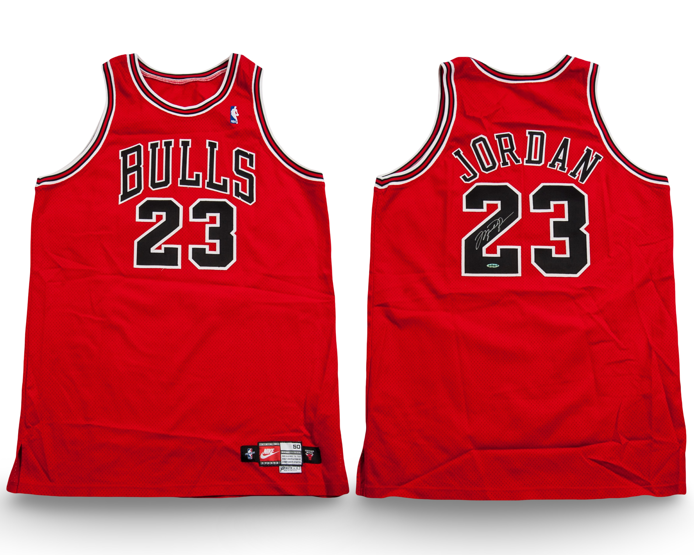

Jersey V
Season
1997–98
Confirmed Match
1
Style
Away
Use
Regular Season
Last Updated: March 4, 2026
Archival Designation System
Each jersey is assigned a permanent archival designation (A, B, C, etc.). These identifiers represent distinct documented physical garments and remain fixed across preseason, regular season, postseason, and year transitions. The designation tracks the garment itself rather than a specific season or chronological sequence.

Privately owned example
1997–98 Chicago Bulls away jersey.
Photo Match Details
- Authentication: Yes
- Photo-Matched: Yes
- Photo-Matched By: MeiGray
- Games Photo-Matched: 1
Documented Games
- March 17, 1998 — Indiana Pacers
Research & Provenance
This jersey is autographed and authenticated by Upper Deck.